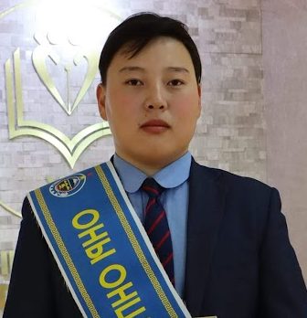

|
|
|

А.Мөнх-Эрдэнэ
Програм сонирхогч • Шатар сонирхогч • Математик сонирхогч
|
Товч намтар
Намайг Авирмэд овогтой Мөнх-Эрдэнэ гэдэг. Би одоо Монгол улсын
их сургуулийн, мэдээллийн технологи электроникийн сургуулийн
программ хангамжийн ангийн 2-р түвшинд суралцдаг. Би ахлах
сургуулиа Увс аймгийн Улаангом сумын ерөнхий боловсролын 1-р
цогцолбор сургуульд суралцаж төгссөн. Би ахлах сургуульдаа
математик, физик, мэдээлэл зүйн хичээлдээ илүү сонирхолтой байсан
бөгөөд Математик болон Мэдээлэл зүйн олимпиадад оролцож байсан
маань намайг программ хангамжийн мэргэжлийг сонирхон сонгоход
хүргэсэн. Одоо би сонгосон мэргэжилдээ илүү сонирхолтой болсон
ба мэргэжлээрээ амжилттай суралцаж байна.
CV (түргэн)
| Боловсрол | Uvs 1-р сургууль, ХС, 2024 |
|---|
| Туршлага | Математик, мэдээлэлзүйн олимпиад |
|---|
| Чадвар | C++, Алгоритм, Математик сэтгэлгээ |
|---|
Хобби
| Хобби | Тайлбар |
|---|
| Шатар | Өсвөрийн тэмцээний медаль |
| Код бичих | Олимпиадын бэлтгэл |
| Багаар ажиллах | Сургалтын арга зүйгээр хичээл заасан |
|
| Буцах: Нүүр хуудас |